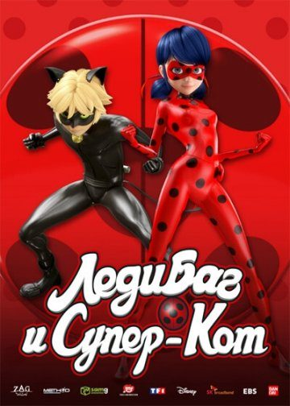
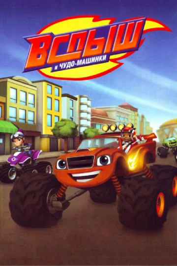
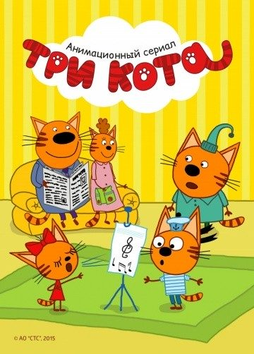
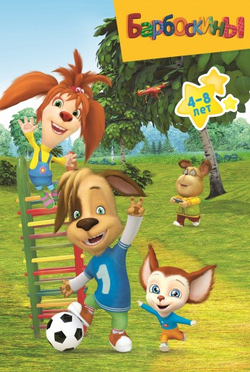
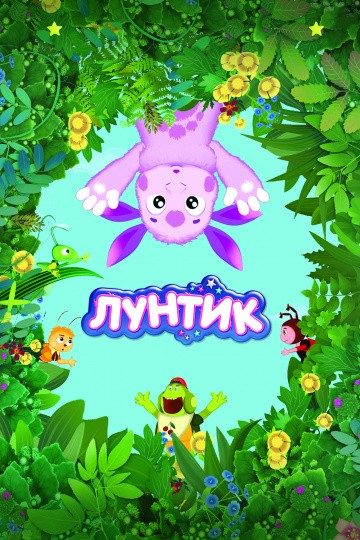
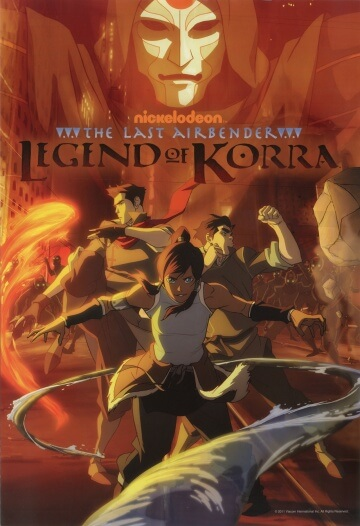
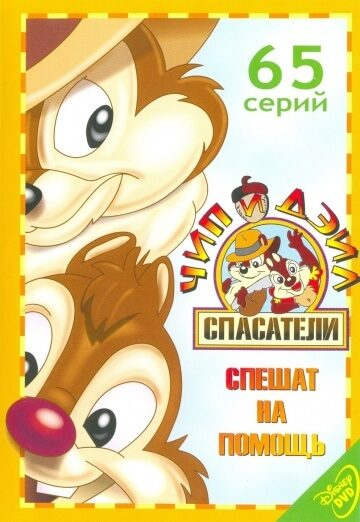
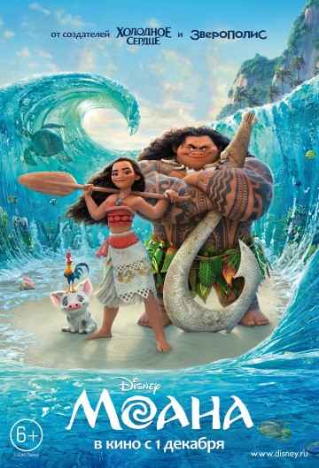
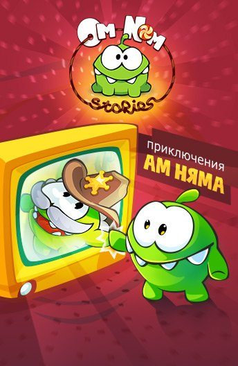
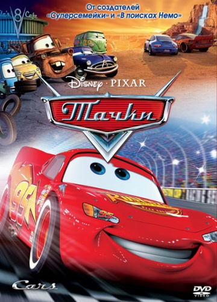

Представляем вашему вниманию подборку мультфильмов для детей.
Топ 10 лучших мультфильмов:

Жанр: мультфильм, фэнтези, боевик, мелодрама, семейный, мультсериал
Режиссёр: Томас Астрюк
В ролях: Джессика Ги, Грант Джордж, Кристина Валенсуела, Брайс Папенбрук, Кит Силверштейн,
Мела Ли, Кэрри Керанен, Макс Миттелман, Бен Дискин, Села Виктор
Премьера этого иностранного современного мультсериала состоялась в России не так давно, но многие российские дети уже с интересом ждут каждой новой серии, как своеобразного вечернего ритуала. События этого мультфильма происходят далеко – далеко от нас, в Париже. А героями данного мультипликационного сериала являются обычные, казалось бы, мальчик и девочка, в которых каждый ребенок может узнать себя. Так почему же сериал так ин тересен маленьким телезрителям? А потому, что эти обычные, на первый взгляд, персонажи являются ни кем иным, как супергероями. Но, обо всем по порядку. В обычной парижской школе учатся тринадцатилетние девочка по имени Маринет Дюпейн - Ченг и мальчик, ее одноклассник, по имени Адриан Агрести. И все бы ничего, но они регулярно превращаются в могущественных супергероев, которые ведут борьбу со злом на улицах родного Парижа. Маринет перевоплощается Леди Баг, а вот Адриан становится Супер – Котом. И есть одно но: Маринет влюблена в Эдриана, а сам Эдриан влюблен в Леди Баг. Такая вот забавная ситуация - вроде бы все просто, но это так сложно... В обычной жизни ребята даже не предполагают кто скрывается под масками своих идолов. Единственное, что они знают, так это то, что только объединившись, они смогут уничтожить своего главного противника, злодея, владеющего темными бабочками, порабощающего всех местных жителей.

Жанр: мультфильм, мультсериал
Режиссёр: Мигель Мартинес-Хоффре, Блэр Симмонс, Бронвин Мартенс
В ролях: Нолан Норт, Кевин Майкл Ричардсон, Нат Факсон, Ди Брэдли Бейкер, Калил Харрис,
Рид Шеннон, Джеймс Патрик Стюарт, Жак Свениган, Кейт Хиггинс, Александр Полински
Данный мультсериал бесспорно станет интересен всем маленьким любителям различных приключений и, конечно же, автомобилей. Главным героем этого мультфильма выступает маленький мальчик по имени Эй - Джей. Наш герой еще очень молод, можно сказать, что он еще мал, но возраст не мешает ему быть очень смышленым мальчиком. К тому же, в любимых увлечениях Эй - Джея значится не что иное, как гонки на машинах. Несмотря на юность, наш герой хорошо водит машину, дружит со скоростью и постоянно выигрывает различные гонки. Помимо Эй - Джея, мы можем наблюдать еще одного героя по имени Блэйз. Блэйз - машина, наделенная такими качествами, как мощь, быстрота и прочие вещи, которые просто необходимы для побед в различных соревнованиях. Соединив все свои качества, машинка и мальчик достигают свои цели и постоянно одерживают победы в гонках. Но смогут ли они получить главную свою победу в чемпионате, где их соперником станет невозмутимый Крушила, автомобиль, чья мощь заставляет содрогаться остальные автомобили. К тому, чтобы заполучить победу, нашим героям понадобится знание точных наук, таких как математика и физика. Ну, что ж, держим кулачки за наших маленьких и волевых чемпионов.

Жанр: мультфильм, короткометражка, детский, мультсериал
Режиссёр: Дмитрий Высоцкий
В ролях: Максим Сергеев, Илья Хрусталёв, Михаил Новодворцев, Александра Глушинская,
Михаил Хрусталёв, Светлана Кузнецова, Владимир Маслаков, Анна Казанцева, Тимур Хамитов, София Гадасина
Развивающий отечественный мультсериал, который точно придется по вкусу всем маленьким детям, поскольку здесь они подружатся с героями, узнают много всего нового и, конечно, не останутся без различных игр. Главными героями мультика становятся, конечно же, три кота, среди которых есть Коржик, Карамелька и Компот. Эти котята такие же неугомонные и любознательные, как и все другие дети. Они хотят не только играть и веселиться целыми днями, но и знать все – все на свете. Ежедневно наши новые друзья преодолевают различные трудности, попадают в веселые приключения, пытаются научиться уважать друг друга и ценить чужое мнение. В общем, наши герои самостоятельно познают окружающий мир и моральные ценности. И, конечно, у наших котят есть много любимых друзей, с которыми они также проводят время, когда с пользой, когда просто в свое удовольствие. Вместе со своими друзьями и семьей наши котята отмечают различные необычные праздники, что – то мастерят, пытаются освоить какие – то профессии, вроде кинооператора или врача, играют, занимаются спортом, да и вообще, всегда фонтанируют множеством интереснейших затей и задумок. Ваши дети точно не захотят оторваться от этого мультика, а потом наверняка пожелают так же активно и полезно проводить свое свободное время.

Жанр: мультфильм, детский, мультсериал
Режиссёр: Екатерина Салабай, Елена Галдобина, Дарина Шмидт
В ролях: Елена Шульман, Ксения Бржезовская, Олег Куликович, Михаил Черняк,
Екатерина Гороховская, Мария Цветкова-Овсянникова
Современный российский мультсериал, который увлекает за собой каждый день огромное количество детей по всей стране. В центре событий находится обычная рядовая семья, проживающая в обычном городском многоквартирном доме. Только вот все члены этой семьи…собаки. Как и все обычные человеческие семьи, Барбоскины ежедневно попадают в различные ситуации, не связанные между собой сюжетом, от серии к серии. Звери ссорятся и мирятся, вместе грустят и веселятся, проживают те жизни, которые проживают миллионы российских семей. Героями этого мультсериала являются родители, которые, кстати, являются родителями многодетной семьи: в доме Барбоскиных целых пять детей! Причем, все они разного возраста и пола, поэтому Барбоскиным – старшим приходится ежедневно сталкиваться с проблемами различных возрастов, решая ситуации то с младшими, то со старшими детьми. В семье собак есть две девочки и три мальчика, самых различных возрастов и характеров, что позволит каждому ребенку узнать в ком – то из любимых героев себя. Причем, старшая девочка находится в том самом переходном возрасте, когда с детьми очень непросто, к тому же, она еще и знатная модница и красавица. Ваш ребенок точно увлечется Барбоскиными, попутно обучаясь тому, как нужно себя вести в его возрасте, а как наоборот совсем не стоит.

Жанр: мультфильм, детский, комедия, приключения, семейный, фэнтези, мультсериал
Режиссёр: Дарина Шмидт, Екатерина Салабай, Екатерина Шрага
В ролях:Михаил Черняк, Екатерина Гороховская, Елена Шульман, Наталья Данилова,
Юлия Рудина, Елена Соловьева, Анатолий Петров, Олег Куликович, Константин Бронзит, Светлана Письмиченко
Однажды откуда – то с далекой – далекой Луны к нам попало яйцо с очень необычным и интересным персонажем, который в последствие был именован Лунтиком. Малыш был совсем беспомощен и совершенно не понимал, как же все устроено в нашем огромном и таком интересном мире. На протяжении всего мультфильма Лунтику и его друзьям предстоит разгадывать загадки глобального и земного происхождения. Лунтик вскоре обретает на нашей планете бабушку и дедушку в лице двух добродушных и ласковых пчел, которые окружают малыша любовью и заботой. Помимо этого, Лунтик обретает и много различных друзей, например, кузнечика Кузю, который хоть и родился на Земле, также пока еще познает устройство мира. Есть тут, конечно же, и два хулигана – Вупсень и Пупсень, вечно недовольные и жующие гусеницы, которые не прочь нашкодить в любое время и в любом месте. Очень добрые, забавные и поучительные приключения наших героев придутся по вкусу маленьким зрителям, научив их добру и правильным жизненным принципам. Помимо этого, друзья откроют детям некоторые секреты природы. И ребенку просто – напросто не будет скучно с любимыми героями и наивным, также по – детски непосредственным Лунтиком, в котором каждый малыш сможет узнать любознательного себя.

Жанр: мультфильм, фэнтези, боевик, приключения, семейный, мультсериал
Режиссёр: Хоаким Дос Сантос, Ки Хьюн Рю, Йен Грэхэм
В ролях:Джанет Вэрни, Джефф Беннетт, Ди Брэдли Бейкер, П.Дж. Бирн, Дэвид Фаустино,
Дж.К. Симмонс, Сейшелл Гэбриел, Минди Стерлинг, Логан Уэллс, Кирнан Шипка
Весь сюжет мультсериала разворачивается в некоем городе, одним из основателей которого был тот самый Аватар Аанг, которому удалось утихомирить столетнюю войну, разрушавшую мир и согласие в их вселенной. Этот город изначально был задуман, как город, где все представители четырех стихий – Огня, Воды, Земли и Воздуха должны жить в полнейшей гармонии, чтобы избежать повторения той самой войны. Только вот со временем среди магических племен опять начинают зарождаться различные конфликты. Только теперь их решением должен заняться новый Аватар. На этот раз им стала молодая девушка, жительница племени Воды по имени Корра. Только у девушки сразу возникает такая проблема: если Аанг изначально был единственным, кто мог владеть силами всех четырех стихий, то Корре этому придется только научиться. Чем девушка успешно и занимается в самом начале мультсериала. Естественно, ей и ее друзьям будут мешать различные недовольные таким положением вещей личности, но наша главная героиня все равно освоит техники управления всеми стихиями и начнет потихоньку двигаться навстречу тому, чтобы помирить и объединить всех жителей города.

Жанр: мультфильм, комедия, детектив, приключения, семейный, мультсериал
Режиссёр: Джон Кимболл, Боб Дзамбони, Алан Заслов
В ролях: Кори Бертон, Питер Каллен, Джим Каммингс, Тресс МакНилл, Роб Полсен, Дэнни Гэнс,
Питер Шрум, Дебора Уолли, Алан Оппенхаймер, Синди МакКей
Любимая уже многими поколениями классика, которая, несомненно, будет интересна и современным детям, и их родителям, решившим окунуться в сладкую ностальгию по детству и юношеству. Этот сериал включает большое количество серий, поэтому увлечь маленького зрителя можно очень надолго. Герои мультсериала – забавные и по – человечески серьезные животные. Животные очень маленькие, но с большими сердцами, амбициями и огромной смелостью. Как только где – то запахло опасностью, наши маленькие герои тут же прибегут, они уже спешат на помощь всем, кому она понадобится. Главными героями мультфильма являются два бурундучка: собственно, Чип и Дейл. Эти два маленьких героя будут веселить Вас и Вашего ребенка на протяжении всего времени, пока идет серия. Помимо них, есть еще две мышки. Один герой – сумасшедший фанат сыра, который, благодаря своей гипнотической любви к этому продукту, чуть не подставлял всю компанию и не подвергал друзей страшной опасности. Поэтому нашим героям нужно думать не только о том, как спасти мир от злодеев, но и как не дать своего друга в лапы коварным врагам, так и норовящим выбросить где – нибудь кусочек волшебного сыра, за которым зверь пойдет так же завороженно, как кобра танцует под дудку факира. И, конечно же, не обошлось без прекрасной дамы: красивая и очень умная Гаечка всегда будет помогать друзьям своей серьезностью.

Жанр: мультфильм, мюзикл, фэнтези, комедия, приключения, семейный
Режиссёр: Рон Клементс, Дон Холл, Джон Маскер
В ролях: Аулии Кравальо, Дуэйн Джонсон, Рэйчел Хаус, Темуэра Моррисон, Джемейн Клемент,
Николь Шерзингер, Алан Тьюдик, Оскар Кайтли, Трой Поламалу, Пуанани Кравальо
Моана – юная дочка вождя, которая со своим племенем живёт на острове Мотунуи. Но однажды в эти плодородные края приходит бедствие: плодовые деревья перестают нести фрукты, в водоемах не ловится рыба. Жители острова не понимают, что происходит. Однако вскоре выясняется, что всему виной могучий полубог Мауи, который, несмотря на всю свою силу, довольно неуклюж и неудачлив. Именно он украл сердце богини жизни Те Фити, и из-за этого мир погрузился во тьму. Но мультфильм повествует о том, что нужно бороться с трудностями, поэтому Моана решает втайне от родителей забрать каноэ и на нём отправиться в путешествие на поиски сердца богини. Она узнаёт, что сердце оказалось на дне моря. В одиночку найти его она вряд ли сможет, поэтому она отправляется к Мауи. Он должен помочь ей, чтобы искупить свою вину, однако во время путешествия он не столько помогает девочке, сколько мешает ей. Несмотря на это, путешествие с Мауи становится весёлым и увлекательным. Герои мультфильма сталкиваются с пиратами, находят новых друзей, узнают цену своей дружбы и встречают демона Те Ка, который замешан в исчезновении сердца богини. Все опасности они преодолевают вместе, и проявляют невиданный героизм ради того, чтобы вернуть счастье в этот мир.

Жанр: короткометражка, мультфильм, мультсериал
Режиссёр: Артур Меркулов
В ролях: ---
---
Несколько лет назад для смартфонов была выпущена нехитрая игра, героем которой стал веселый и очень милый маленький монстрик по имени Ам Ням. Суть игры заключалась в том, чтобы Ам Ням обязательно скушал конфетку, иначе он очень расстраивался и корчил грустные мордочки. Естественно, игра очень быстро набрала популярность у взрослых, но особенно герой игрушки полюбился маленьким игроманам и любителям мультяшных героев, поэтому вскоре было принято решение о создании мультсериала об этом забавном монстрике по имени Ам Ням. Ам Ням так полюбился детям потому, что он существенно отличается ото всех остальных монстров, которые сейчас часто мелькают в различных мультфильмах. Наш герой, скорее, похож на маленького лягушонка, который очень и очень сильно любит сладости. Не помочь такому существу полакомиться сладостью просто невозможно. В мультсериале добавляется еще один главный герой, уже человек, мальчик по имени Эван, который в один прекрасный день обнаруджил на пороге своего дома загадочную картонную коробку, где сидел наш маленький Ам ням. Мальчик, конечно же, сначала очень перепугался и не знал, как ему быть с монстриком. Но что – то подсказало Эвану покормить Ам Няма вкусными конфетками. С этого момента наш Ам Ням и Эван стали лучшими друзьями, которые и пустились в приключения на протяжении всего мультсериала.

Жанр: мультфильм, комедия, приключения, семейный, спорт
Режиссёр: Джон Лассетер, Джо Рэнфт
В ролях: Оуэн Уилсон, Пол Ньюман, Бонни Хант, Ларри-кабельщик, Чич Марин,
Тони Шэлуб, Гуидо Куарони, Дженифер Льюис, Пол Дули, Майкл Уоллис
Главный герой мультфильма, Молния Маккуин – гоночный автомобиль, который видит смысл жизни только в скорости и гонках. Он часто побеждает в гоночных соревнованиях, но однажды приходит к финишу вместе с двумя своими соперниками – они втроём имеют одинаковый результат, хотя победить может только один. Тогда судьи принимают решение провести ещё одну гонку, которая состоится в Калифорнии. Молния отправляется туда в собственном трейлере. Но совершенно неожиданно ночью Молния вываливается из трейлера и остаётся на ночной дороге один. Он пытается нагнать трейлер, но сбивается с пути и оказывается в небольшом провинциальном автомобильном городке – настоящем захолустье под названием Радиатор-Спрингс. Здесь он знакомится с остальными персонажами мультфильма – автомобилями. Когда-то этот город был очень популярен, но теперь, после проведения неподалёку шоссе, его стали все объезжать стороной. Так как Молния ночью совершил правонарушение, теперь он должен был остаться в этом городе на некоторое время и заняться общественными работами. Он пытался объяснить жителям, что спешит на гонку, но в итоге остался среди них, нашёл в этом городе новых друзей и понял, что в жизни есть кое-что более важное, чем победы и слава.